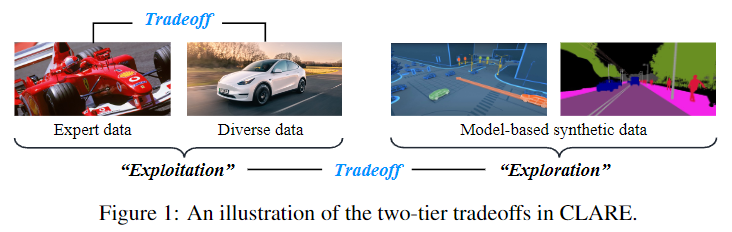

Code
a = 10
b = 20
print(a + b)30Selian
April 14, 2026
10 is ten.
내용
본 연구는 오프라인 역강화 학습(IRL)의 주요 난제인 reward extrapolation error(보상 외삽 오류)를 해결하고자 한다.
이는 학습된 보상 함수가 과업을 올바르게 설명하지 못하고, 내재된 공변량 변화(covariate shift)로 인해 접하지 못한 환경에서 에이전트를 잘못된 길로 이끌 수 있는 문제이다.
전문가 데이터와 품질이 낮은 다양한 데이터를 모두 활용하여, 본 연구에서는 학습된 보상 함수에 “보수성”을 추가하고 추정된 동역학 모델을 이용하여 오프라인 IRL을 효율적으로 해결하는 원칙에 기반하는 알고리즘(CLARE)을 고안했다.
우리의 이론적 분석은 학습된 정책과 전문가 정책 간의 수익 격차에 대한 상한선을 제공하여, 이를 바탕으로 (전문가 데이터와 다양한 데이터 모두에 대한) “활용”과 (추정된 동역학 모델에 대한) “탐색” 사이의 미묘한 이중적 트레이드 오프를 검토함으로써 공변량 변화의 영향을 규명한다.
우리는 CLARE가 적절한 ‘활용-탐색’ 균형을 맞춤으로써 보상 외삽 오류를 이론적으로 완화할 수 있음을 보여준다.
광범위한 실험을 통해 MuJoCo 연속 제어 과업(특히 작은 오프라인 데이터셋의 경우)에서 CLARE가 기존의 최첨단 알고리즘들에 비해 상당한 성능 향상을 보임을 입증했으며, 학습된 보상은 추가적인 학습에 매우 유용하다는 것을 확인했다.
IRL의 주요 목표는 시연으로부터 보상 함수를 학습하는 것이다. 일반적으로, 기존의 IRL 방법은 (비용이 많이 들거나 완전히 알려진 전이 모델을 요구하는) 광범위한 온라인 시행착오에 의존하며, 많은 실제 응용 분야에서 확장하는 데 어려움을 겪는다. 이 문제를 해결하기 위해, 본 논문은 온라인 상호작용 없이 이전에 수집된 데이터셋으로부터 학습하는 데 초점을 맞춘 오프라인 IRL을 연구한다. 오프라인 IRL은 수동으로 적절한 보상을 식별하기는 어렵지만 인간 시연의 과거 데이터셋을 쉽게 사용할 수 있는 안전에 민감한 응용 분야(예: 헬스케어, 자율 주행, 로보틱스 등)에서 엄청난 잠재력을 가진다. 특히, 학습된 보상 함수는 전문가의 의도를 간결하게 표현하기 때문에 정책 학습(예: 오프라인 모방 학습(IL))뿐만 아니라 더 넓은 범위의 응용 분야(예: 과업 설명 및 전이 학습)에도 유용하다. 본 연구는 오프라인 IRL의 주요 난제, 즉 보상 외삽 오류를 해결하는 것을 목표로 하며, 이는 학습된 보상 함수가 과업을 올바르게 설명하지 못하고 보지 못한 환경에서 에이전트를 잘못 이끌 수 있는 문제이다. 이 문제는 제한된 전문가 시연(expert demonstrations)에서 상태의 부분적인 커버리지(즉, 공변량 변화)와 보상에 대한 고차원적이고 표현력이 풍부한 함수 근사로 인해 발생한다. 이는 감독을 위한 강화 신호가 없고 내재된 보상의 모호성 때문에 더욱 악화된다. 사실, 가치 함수에서의 외삽 오류와 관련된 유사한 문제들은 오프라인 (순방향) RL에서 널리 관찰되어 왔다. 불행히도, 우리가 아는 한, 최근 일부 진전에도 불구하고 이 문제는 오프라인 IRL에서 아직 잘 이해되지 않고 있다. 따라서 본 논문이 답하고자 하는 핵심 질문은 “보상 외삽 오류를 효과적으로 개선할 수 있는 오프라인 IRL 알고리즘을 어떻게 고안할 것인가?”이다.
우리는 이 질문에 대해, 공변량 변화에 대응하기 위해 상태-행동 공간의 커버리지를 강화하고자 (제한된) 고품질 전문가 데이터뿐만 아니라 (풍부할 수 있는) 저품질의 다양한 데이터를 활용하는, 원칙에 기반한 IRL 알고리즘인 CLARE(conservative model-based reward learning)를 소개한다. CLARE는 분포를 벗어난 상태(out-of-distribution)에서의 잘못된 유도를 완화하기 위해 학습된 보상에 보수성을 적절히 통합하고, 학습된 동역학 모델을 활용하여 보상 일반화 능력을 향상시킴으로써 위에서 언급한 문제를 해결한다. 더 구체적으로, CLARE는 보수적인 보상 업데이트와 안전한 정책 개선을 반복하며, 보상 함수는 가중치가 부여된 전문가 및 다양한 상태-행동에 대한 가치를 높이는 동시에 모델 롤아웃(model rollouts)으로부터 생성된 것들에는 신중하게 페널티를 부여하는 방식으로 업데이트된다. 그 결과, 이 방법은 전문가의 의도를 담아내면서도 분포를 벗어난 상태-행동을 보수적으로 평가할 수 있으며, 이는 결과적으로 정책이 데이터로 뒷받침되는 상태를 방문하고 전문가의 행동을 따르도록 장려하여 안전한 정책 탐색을 달성하게 한다.
기술적으로, CLARE가 섬세하게 조정해야 하는 매우 간단하지 않은 two-tier tradeoffs가 있다: 전문가 데이터와 다양한 데이터의 ’균형 잡힌 활용’과 추정된 모델의 ’탐색’이다.

그림 1에 나타난 바와 같이, 첫 번째 트레이드오프는 CLARE가 보상을 추론하기 위해 전문가 시연을 활용하는 것과, 제한된 시연 데이터의 불충분한 상태-행동 커버리지로 인해 발생하는 공변량 변화를 처리하기 위해 다양한 데이터를 활용하는 것 모두에 의존하기 때문에 발생한다. 더 높은 수준에서, CLARE는 더 나은 일반화를 위해 오프라인 데이터 매니폴드(manifold)에서 벗어나고자 추정된 모델을 신중하게 탐색해야 한다. 이를 위해, 우리는 먼저 미묘한 이중적 활용-탐색 트레이드오프를 포착하기 위해 오프라인 데이터 포인트(상태-행동 쌍)에 대한 새로운 점별 가중치 매개변수(pointwise weight parameters)를 도입한다. 그 다음, 우리는 학습된 정책과 전문가 정책 간의 수익 격차에 대한 상한을 제공함으로써 성능에 미치는 영향을 엄밀하게 정량화한다. 이론적 정량화에 기초하여, 우리는 CLARE가 수익 격차를 최소화하기 위해 적절하게 균형을 맞출 수 있는 최적의 가중치 매개변수를 도출한다. 우리 연구는 CLARE를 통해 얻은 보상 함수가 전문가의 의도를 효과적으로 포착하고 오프라인 IRL에서 외삽 오류를 이론적으로 개선할 수 있음을 보여준다.